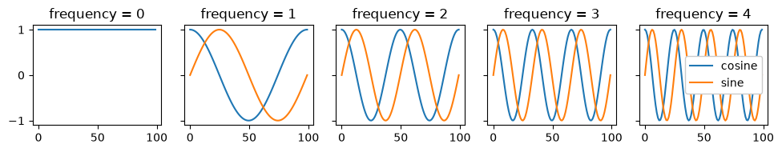
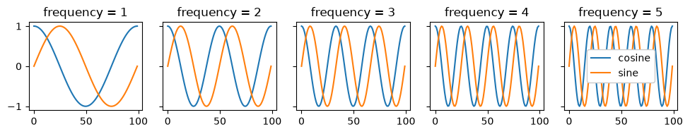
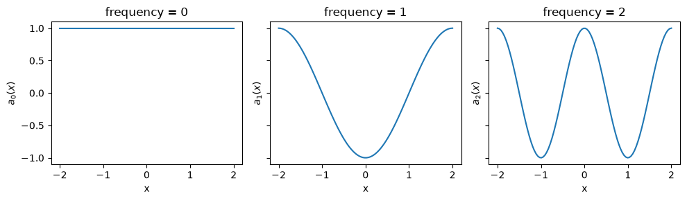
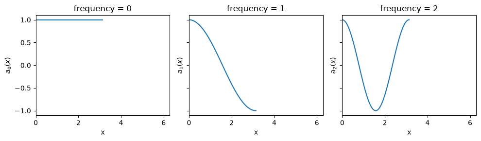
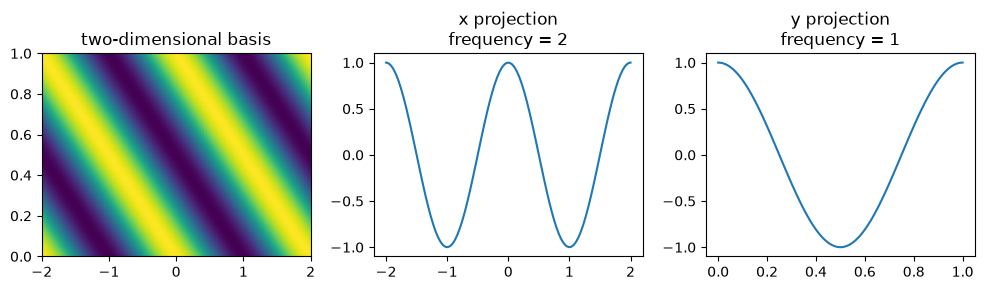
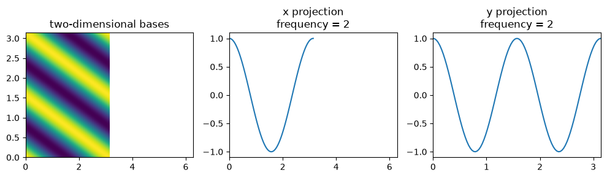

Download
Download this notebook: ndimensional_foureir_basis.ipynb!
Fourier Basis#
The Fourier basis uses a slightly different API from other bases in NeMoS. This page covers everything you need to use it.
One-Dimensional Fourier Basis#
A one-dimensional Fourier basis is a complex basis whose elements are
where \(P>0\) is the period, \(x\) is the input variable, and \(n\in\mathbb{N}\) is the frequency index.
Fourier Basis in NeMoS#
In NeMoS, you can define a FourierEval basis object with the following syntax:
from nemos.basis import FourierEval
import numpy as np
import matplotlib.pyplot as plt
# 5 frequencies, from 0 to 4, no masking
# (the default behavior is masking-out frequency 0, see below)
fourier_1d = FourierEval(frequencies=5, frequency_mask=None)
x = np.linspace(0, 1, 400)
X = fourier_1d.compute_features(x)
print("frequencies:", fourier_1d.masked_frequencies[0].tolist())
print("design matrix shape:", X.shape) # (n_samples, n_features)
frequencies: [0.0, 1.0, 2.0, 3.0, 4.0]
design matrix shape: (400, 9)
The compute_features method of the basis returns a real design matrix that splits real and imaginary parts into separate columns, first the cosine columns then the sine.
How did we get this number of columns in the design matrix?
Let the selected frequencies be the sorted set \(\mathcal F=\{n_1<\cdots<n_K\}\).
Each frequency contributes a cosine and a sine, so with \(K\) frequencies you’d expect \(2K\) columns. This is the case when the 0 frequency - DC term - is not included. If the DC term is included, we have that the corresponding sine column is null, since \(\sin(0)=0\). For this reason, the column is omitted — giving \(2K-1\). In our example \(K=5\) and the DC term is included, therefore we obtain \(2*5-1=9\) columns. Summarizing,
\(n_1=0\) (with DC):
\[ \bigl[\;1,\,\cos(2\pi \frac{n_2}{P}x),\,\ldots,\,\cos(2\pi \frac{n_K}{P}x),\ \ \sin(2\pi \frac{n_2}{P}x),\,\ldots,\,\sin(2\pi \frac{n_K}{P}x)\;\bigr], \]total columns \(=2K-1\).
\(n_1>0\) (without DC):
\[ \bigl[\;\cos(2\pi \frac{n_1}{P}x),\,\ldots,\,\cos(2\pi \frac{n_K}{P}x),\ \ \sin(2\pi \frac{n_1}{P}x),\,\ldots,\,\sin(2\pi \frac{n_K}{P}x)\;\bigr], \]total columns \(=2K\).
# NOTE: here and below, '5' = number of frequencies (K in the math)
print("5 frequencies including the DC term:")
print("frequencies:", fourier_1d.frequencies[0])
print("output features: 5 * 2 - 1 = ", fourier_1d.n_basis_funcs)
# `evaluate_on_grid` calls `compute_features` on a grid of point
_, X = fourier_1d.evaluate_on_grid(100)
f, axs = plt.subplots(1, 5, figsize=(10, 2), sharey=True)
for freq in fourier_1d.frequencies[0]:
axs[int(freq)].set_title(f"frequency = {int(freq)}")
axs[int(freq)].plot(X[:, int(freq)], label="cosine")
if freq != 0:
# to get the corresponding sin column
# add the num of frequencies (5), minus dc term (1)
idx_sin = int(freq) + 5 - 1
axs[int(freq)].plot(X[:, idx_sin], label="sine")
plt.legend(framealpha=1)
plt.tight_layout()
plt.show()
5 frequencies including the DC term:
frequencies: [0. 1. 2. 3. 4.]
output features: 5 * 2 - 1 = 9

Without DC (1..5): same pair
# drop the DC term (5 frequencies)
fourier_1d = FourierEval(frequencies=(1, 6))
print("\n5 frequencies without the DC term:")
print("frequencies:", fourier_1d.frequencies[0])
print("output features: 5 * 2 = ", fourier_1d.n_basis_funcs)
f, axs = plt.subplots(1, 5, figsize=(10, 2), sharey=True)
# `evaluate_on_grid` calls `compute_features` on a grid of point
_, X = fourier_1d.evaluate_on_grid(100)
for freq in fourier_1d.frequencies[0]:
idx_freq = int(freq) - 1
axs[idx_freq].set_title(f"frequency = {int(freq)}")
axs[idx_freq].plot(X[:, idx_freq], label="cosine")
# to get the corresponding sin column
# add the num of frequencies (5), no dc term to subtract
idx_sin = idx_freq + 5
axs[idx_freq].plot(X[:, idx_sin], label="sine")
plt.legend(framealpha=1)
plt.tight_layout()
plt.show()
5 frequencies without the DC term:
frequencies: [1. 2. 3. 4. 5.]
output features: 5 * 2 = 10

Selecting frequencies#
You can provide frequencies as:
An integer \(n\), that will result in frequencies \(0, \ldots, n-1\).
A range \((n, m)\), that will result in frequencies \(n, \ldots, m-1\).
An array of integers.
A list of length
ndimof any of the above.
Warning
Important distinction between lists and arrays:
An array (
np.array([4, 5])): Specifies the exact frequencies[4, 5](sorted) for all dimensionsA list (
[4, 5]): Specifies different frequency specifications per dimension - 4 frequencies[0,1,2,3]for dimension 1, and 5 frequencies[0,1,2,3,4]for dimension 2
This difference allows flexible specification: use arrays when you want the same custom frequencies across all dimensions, use lists when you want different frequency specifications per dimension.
fourier_1d = FourierEval(frequencies=5)
print("- frequencies=5: ", fourier_1d.frequencies)
fourier_1d = FourierEval(frequencies=(5, 10))
print("- frequencies=(5, 10): ", fourier_1d.frequencies)
fourier_1d = FourierEval(frequencies=np.array([1, 3, 5]))
print("- frequencies=np.array([1, 3, 5]): ", fourier_1d.frequencies)
- frequencies=5: [Array([0., 1., 2., 3., 4.], dtype=float32)]
- frequencies=(5, 10): [Array([5., 6., 7., 8., 9.], dtype=float32)]
- frequencies=np.array([1, 3, 5]): [Array([1., 3., 5.], dtype=float32)]
By default, NeMoS masks out the intercept (the DC term at frequency 0). This is because NeMoS bases are most often used to build design matrices for GLMs, and NeMoS GLMs already include an intercept; adding another would be redundant.
# default masking
fourier_1d = FourierEval(frequencies=5)
# masked frequencies are 1..4
print("masked frequencies: ", fourier_1d.masked_frequencies[0])
# number of output features: (4 frequencies) * 2 = 8 (cos & sin)
fourier_1d.compute_features(np.linspace(0, 1, 10)).shape
masked frequencies: [1. 2. 3. 4.]
(10, 8)
You can override this behavior by setting frequency_mask to None or "all" to keep the DC term.
# keep all frequencies, including 0 (DC)
fourier_1d = FourierEval(frequencies=5, frequency_mask=None)
# masked frequencies are 0..4
print("masked frequencies: ", fourier_1d.masked_frequencies[0])
# number of output features: (5 frequencies)*2 - 1 = 9
# (DC contributes only a cosine term; no sine at 0)
fourier_1d.compute_features(np.linspace(0, 1, 10)).shape
masked frequencies: [0. 1. 2. 3. 4.]
(10, 9)
Setting the Period of the Basis#
When evaluating the basis at some values \(\boldsymbol{x} = \{x_1,...,x_t\}\), NeMoS assumes that the period of the basis is \(P = \max(\boldsymbol{x}) - \min(\boldsymbol{x})\). The basis element with frequency equal to \(n\) will therefore oscillate \(n\) times over the range of values covered by \(\boldsymbol{x}\).
More on the Fourier Mapping
More precisely, let \(\boldsymbol{x}=(x_1,\ldots,x_T)\). For an integer \(n\ge 0\), the \(n\)-th Fourier basis element maps each \(x_j\) to
for \(j=1,\ldots,T\).
The fundamental period over \(x\) is \(P=\max(\boldsymbol{x})-\min(\boldsymbol{x})\): the \(n\)-th basis element completes \(n\) full cycles as \(x\) runs from \(\min(\boldsymbol{x})\) to \(\max(\boldsymbol{x})\).
The phase is zero at \(\min(\boldsymbol{x})\): \(a_n(\min(\boldsymbol{x}))=1+0i\).
fourier_1d = FourierEval(frequencies=5, frequency_mask="all")
# generate an input ranging [-2, 2]
x = np.linspace(-2, 2, 100)
# evaluate the basis
X = fourier_1d.compute_features(x)
f, axs = plt.subplots(1, 3, figsize=(10, 3), sharey=True, sharex=True)
for freq in [0, 1, 2]:
axs[freq].set_title(f"frequency = {freq}")
axs[freq].plot(x, X[:, freq])
axs[freq].set_xlabel("x")
axs[freq].set_ylabel(f"$a_{{{freq}}}(x)$")
plt.tight_layout()
plt.show()

To fix a domain for the basis, for example \([0, 2 \pi]\), you can provide the bounds parameter.
# fix bounds for the range of the input
fourier_1d.bounds = (0, 2*np.pi)
# generate an input not covering the whole range
x = np.linspace(0, np.pi, 100)
# evaluate the basis
X = fourier_1d.compute_features(x)
f, axs = plt.subplots(1, 3, figsize=(10, 3), sharey=True, sharex=True)
for freq in [0, 1, 2]:
axs[freq].set_title(f"frequency = {freq}")
axs[freq].plot(x, X[:, freq])
axs[freq].set_xlabel("x")
axs[freq].set_ylabel(f"$a_{{{freq}}}(x)$")
axs[freq].set_xlim(0, 2 * np.pi)
plt.tight_layout()
plt.show()

With bounds=(0, 2π) fixed but \(\boldsymbol{x} \in [0, \pi]\), each frequency \(n\) is defined to complete \(n\) cycles over the full domain \([0,2\pi]\). Since we are only sampling half the domain, each curve shows only the first half of those \(n\) cycles (e.g., for \(n=2\) you see one full cycle).
The bounds can be provided at initialization as well.
fourier_1d = FourierEval(5, bounds=(0, 2*np.pi))
fourier_1d
FourierEval(frequencies=[Array([0., 1., 2., 3., 4.], dtype=float32)], ndim=1, bounds=(0.0, 6.283185307179586), frequency_mask='no-intercept')In a Jupyter environment, please rerun this cell to show the HTML representation or trust the notebook.
On GitHub, the HTML representation is unable to render, please try loading this page with nbviewer.org.
Parameters
| frequencies | [Array([0., 1....dtype=float32)] | |
| bounds | (0.0, ...) | |
| ndim | 1 | |
| frequency_mask | 'no-intercept' | |
| label | 'FourierEval' |
More on the Bounds
When bounds \(b_{\min} < b_{\max}\), are provided, the mapping from input \(\boldsymbol{x}=(x_1,\ldots,x_T)\) to the \(n\text{-th}\) basis element works as follows.,
for \(j=1,\ldots,T\).
In other words,
The fundamental period over \(x\) is \(P=b_{\max} - b_{\min}\): the \(n\)-th basis element completes \(n\) full cycles as \(x\) runs from \(b_{\min}\) to \(b_{\max}\).
The phase is zero at \(b_{\min}\): \(\;a_n(b_{\min})=1+0i\).
The basis evaluated at samples lying outside the bounds will return a NaN.
Multi-Dimensional Fourier Basis#
Fourier bases extend to \(D\) dimensions. Let \(\mathbf{x}=(x_1,\dots,x_D)\), per-axis periods \(\mathbf{P}=(P_1,\dots,P_D)\), and multi-index \(\mathbf{n}=(n_1,\dots,n_D)\) (the set of multi-indices actually retained is described in Avoiding redundant frequencies below).
A \(D\)-dimensional basis element is
Note
For simplicity, in the rest of the session we will focus on a 2D example, but everything holds true for a general D-dimensional basis.
Avoiding redundant frequencies#
In one dimension only non-negative frequencies are needed: \(a_{-n}\) adds nothing to \(a_n\), since the cosine is even and the sine is odd. The same redundancy holds for the multi-index when \(D \ge 2\) — \(\mathbf{n}\) and \(-\mathbf{n}\) give the same cosine and a sign-flipped sine, so their feature pairs are linearly dependent. NeMoS therefore keeps one representative of each \(\{\mathbf{n},-\mathbf{n}\}\) pair: the all-zero index (DC), or the index whose first non-zero coordinate is positive.
You still pass non-negative frequencies per axis; NeMoS mirrors the trailing axes to add their negative frequencies and keeps that half-space. In practice:
the leading axis stays non-negative;
on the trailing axes both signs are kept whenever a preceding coordinate is already positive — e.g. \((1, m)\) is kept for \(m\) of either sign, because \((1, m)\) and \((1, -m)\) are genuinely different functions;
but an index that is zero up to some axis \(i\) is kept only if its first non-zero entry is positive — e.g. of \((0, m)\) and \((0, -m)\) only the one with \(m>0\) is kept.
Definition in NeMoS#
First, let’s specify the notation to the 2D case used in the examples. We can write \(\mathbf{x}=(x,y)\), and \(\mathbf{n}=(n,m)\); we’ll use \(n\) for the \(x\)-axis frequency and \(m\) for the \(y\)-axis frequency.
Defining a two-dimensional Fourier basis follows the syntax:
# 2D basis with n=0,...,4 (x-axis) and m=0,...,3 (y-axis) frequencies
fourier_2d = FourierEval(frequencies=[5, 4], ndim=2)
# Equvalent definitons
print("Pass a list of tuple:\n", FourierEval(frequencies=[(0, 5), (0, 4)], ndim=2))
print("Pass a list of arrays:\n", FourierEval(frequencies=[np.arange(5), np.arange(4)], ndim=2))
Pass a list of tuple:
FourierEval(frequencies=[Array([0., 1., 2., 3., 4.], dtype=float32), Array([0., 1., 2., 3.], dtype=float32)], ndim=2, frequency_mask='no-intercept')
Pass a list of arrays:
FourierEval(frequencies=[Array([0., 1., 2., 3., 4.], dtype=float32), Array([0., 1., 2., 3.], dtype=float32)], ndim=2, frequency_mask='no-intercept')
The \(y\)-axis is mirrored internally to \(7\) signed frequencies, so the half-space of this \(5\times 4\) grid has \(32\) pairs (including the DC). The DC pair \(\mathbf{n}=(0,0)\) is dropped by default, leaving \(31\) pairs, each contributing a cosine and a sine: \(2\cdot 31 = 62\) features.
fourier_2d.n_basis_funcs
62
All the frequency pairs are stored in the masked_frequencies array of shape (ndim, n_frequency_pairs).
Note
masked_frequencies lists the frequency pairs that are currently active in the basis. If you later mask out some pairs, this array will update to include only the kept ones. Details follow in the frequency selection section.
print("frequency pairs:\n", fourier_2d.masked_frequencies)
print("shape of the `masked_frequencies` array:", fourier_2d.masked_frequencies.shape)
frequency pairs:
[[ 0. 0. 0. 1. 1. 1. 1. 1. 1. 1. 2. 2. 2. 2. 2. 2. 2. 3.
3. 3. 3. 3. 3. 3. 4. 4. 4. 4. 4. 4. 4.]
[ 1. 2. 3. -3. -2. -1. 0. 1. 2. 3. -3. -2. -1. 0. 1. 2. 3. -3.
-2. -1. 0. 1. 2. 3. -3. -2. -1. 0. 1. 2. 3.]]
shape of the `masked_frequencies` array: (2, 31)
Note
You can check for the presence of the DC term by assessing if fourier_2d.masked_frequencies[:, 0] is all zeros.
Selecting The Frequencies#
The frequencies argument specifies, per axis, which non-negative integer frequencies to use. NeMoS mirrors the trailing axes to add negative frequencies and keeps the half-space (see Avoiding redundant frequencies); the retained multi-indices \(\mathbf{n}\) are listed in masked_frequencies.
fourier_2d = FourierEval(frequencies=[np.array([1,2,3]), np.array([4,5])], ndim=2)
print(fourier_2d.masked_frequencies)
[[ 1. 1. 1. 1. 2. 2. 2. 2. 3. 3. 3. 3.]
[-5. -4. 4. 5. -5. -4. 4. 5. -5. -4. 4. 5.]]
Here you pass \(n \in \{1,2,3\}\) and \(m \in \{4,5\}\). The \(y\)-axis is mirrored to \(m \in \{-5,-4,4,5\}\). Because every \(n \ge 1\) is already positive, the leading coordinate fixes the half-space and all sign combinations of \(m\) are kept — \(3 \times 4 = 12\) pairs \((n,m)\), including the negative \(y\)-frequencies printed above.
You can subselect specific pairs by masking. The mask can be:
A 1-D boolean array with one entry per retained pair, i.e. per column of
masked_frequencies.A function
f(n, m) -> True/False.
Mask With a Boolean Array#
Entry \(i\) of the mask keeps (True/1) or drops (False/0) the pair masked_frequencies[:, i]. The workflow is to inspect masked_frequencies and build the mask from its columns, by hand or with vectorized comparisons. For example, let’s keep the pairs \((1,4), (2,4), (2,5)\):
pairs = fourier_2d.masked_frequencies
frequency_mask = ((pairs[0] == 1) & (pairs[1] == 4)) | ((pairs[0] == 2) & (pairs[1] > 0))
print("frequency mask")
print(frequency_mask.astype(int))
fourier_2d.frequency_mask = frequency_mask
print("\nmasked frequencies")
print(fourier_2d.masked_frequencies)
frequency mask
[0 0 1 0 0 0 1 1 0 0 0 0]
masked frequencies
[[1. 2. 2.]
[4. 4. 5.]]
An array mask always filters the current masked_frequencies: assigning a second array mask filters the already-filtered pairs, and it must have one entry per remaining pair. To start over from the full half-space, reset the mask to "all" (or "no-intercept"):
fourier_2d.frequency_mask = "all"
print(fourier_2d.masked_frequencies)
[[ 1. 1. 1. 1. 2. 2. 2. 2. 3. 3. 3. 3.]
[-5. -4. 4. 5. -5. -4. 4. 5. -5. -4. 4. 5.]]
The mask can address the DC pair whenever it is among the current pairs: for example, construct with frequency_mask="all" and frequencies that include 0 (as an integer specification like frequencies=5 does), then assign the array mask.
A mask whose length does not match the number of retained pairs raises an error pointing you back to masked_frequencies:
fourier_2d.frequency_mask = np.ones(5)
---------------------------------------------------------------------------
ValueError Traceback (most recent call last)
Cell In[17], line 1
----> 1 fourier_2d.frequency_mask = np.ones(5)
File ~/venv/lib/python3.12/site-packages/nemos/basis/_basis_mixin.py:164, in BasisMixin.__setattr__(self, name, value)
162 if name == "bounds" and self._is_discrete:
163 raise AttributeError(f"{self.__class__.__name__} has no bounds.")
--> 164 super().__setattr__(name, value)
File ~/venv/lib/python3.12/site-packages/nemos/basis/_fourier_basis.py:564, in FourierBasis.frequency_mask(self, values)
562 self._frequency_mask = values
563 else:
--> 564 self._set_array_frequency_mask(values)
566 # used to drop or not the zero phase
567 self._has_zero_phase = (
568 0
569 if self._freq_combinations.size == 0
570 else int(jnp.all(self._freq_combinations[:, 0] == 0))
571 )
File ~/venv/lib/python3.12/site-packages/nemos/basis/_fourier_basis.py:594, in FourierBasis._set_array_frequency_mask(self, values)
592 expected_len = self.masked_frequencies.shape[1]
593 if not values.shape == (expected_len,):
--> 594 raise ValueError(
595 f"Mis-shaped ``frequency_mask``. An array mask must have shape "
596 f"``({expected_len},)``, one entry per frequency combination: "
597 f"entry ``i`` keeps (1/True) or drops (0/False) the combination "
598 f"``masked_frequencies[:, i]``. Print the ``masked_frequencies`` "
599 "attribute to see the combinations currently included."
600 )
602 self._frequency_mask = values
603 self._freq_combinations = self._freq_combinations[:, values]
ValueError: Mis-shaped ``frequency_mask``. An array mask must have shape ``(12,)``, one entry per frequency combination: entry ``i`` keeps (1/True) or drops (0/False) the combination ``masked_frequencies[:, i]``. Print the ``masked_frequencies`` attribute to see the combinations currently included.
Mask With a Callable#
Alternatively, we can specify complex masking rules by defining a mask function. For example, let’s filter for the frequency pairs that lies inside a circle of radius of 4.5.
frequency_mask = lambda x, y: np.sqrt(x**2 + y**2) < 4.5
fourier_2d.frequency_mask = frequency_mask
print("\nmasked frequencies")
print(fourier_2d.masked_frequencies)
masked frequencies
[[ 1. 1. 2. 2.]
[-4. 4. -4. 4.]]
More on Masking with Callables
Write the function as
f(n, m)for 2D. The first argument maps tomasked_frequencies[0](x-axis, \(n\)), the second tomasked_frequencies[1](y-axis, \(m\)). In \(D\) dimensions usef(n1, ..., nD)in the same row order asmasked_frequencies.NeMoS evaluates the function once per half-space combination, passing the frequencies as scalars (the signed \(\mathbf{n}\), so \(m\) may be negative). It must return a single boolean or 0/1 —
Truekeeps that \((n,m)\),Falsedrops it.Unlike an array mask, a callable is always applied to the full half-space (including the DC pair), regardless of the mask currently in place.
Setting the Periodicities#
By default, each axis uses its own input span as the period, reusing the 1D rule per axis: \(P_d=\max(\boldsymbol{x}_d)-\min(\boldsymbol{x}_d)\).
fourier_2d = FourierEval(frequencies=[5, 4], ndim=2)
x, y = np.meshgrid(
np.linspace(-2, 2,100),
np.linspace(0, 1, 100),
)
X = fourier_2d.compute_features(x.flatten(), y.flatten())
# reshape to match the (100, 100) grid
X = X.reshape(100, 100, fourier_2d.n_basis_funcs)
# select frequencies n=2, m=1
idx = np.where(
(fourier_2d.masked_frequencies[0] == 2) &
(fourier_2d.masked_frequencies[1] == 1)
)[0][0]
# plot the output
f, axs = plt.subplots(1, 3, figsize=(10, 3))
# 2-dimensional basis
axs[0].pcolormesh(x, y, X[..., idx], shading='gouraud', cmap='viridis')
axs[0].set_title("two-dimensional basis")
# 1-dimensional projections
axs[1].plot(x[0], X[0, :, idx])
axs[1].set_title("x projection\nfrequency = 2")
axs[2].plot(y[:, 0], X[:, 0, idx])
axs[2].set_title("y projection\nfrequency = 1")
plt.tight_layout()
plt.show()

As we can see, the \(x\)-projection, the basis element with \(n=2\) completes two cycles across the sampled \(x\) range, and on the \(y\) projection, the basis element with \(m=1\) completes one cycle.
One can set the period by providing a single bounds tuple that applies to all dimensions, or one tuple per dimension.
# assign a different domain per dimension
fourier_2d.bounds = [(0, 2*np.pi), (0, np.pi)]
x, y = np.meshgrid(
np.linspace(0, np.pi,100), # x spans the half of the domain
np.linspace(0, np.pi, 100), # y spans the whole domain
)
X = fourier_2d.compute_features(x.flatten(), y.flatten())
# reshape to match the (100, 100) grid
X = X.reshape(100, 100, fourier_2d.n_basis_funcs)
# select frequencies n=2, m=2
idx = np.where(
(fourier_2d.masked_frequencies[0] == 2) &
(fourier_2d.masked_frequencies[1] == 2)
)[0][0]
# plot the values
f, axs = plt.subplots(1, 3, figsize=(10, 3))
axs[0].pcolormesh(x, y, X[..., idx], shading='gouraud', cmap='viridis')
axs[0].set(xlim=(0, 2*np.pi), ylim=(0, np.pi))
axs[0].set_title("two-dimensional bases")
axs[1].plot(x[0], X[0, :, idx])
axs[1].set_title("x projection\nfrequency = 2")
# x domain [0, 2 pi]
axs[1].set_xlim(0, 2*np.pi)
axs[2].plot(y[:, 0], X[:, 0, idx])
axs[2].set_title("y projection\nfrequency = 2")
# y domain [0, pi]
axs[2].set_xlim(0, np.pi)
plt.tight_layout()
plt.show()

With bounds \([(0, 2\pi), (0, \pi)]\) and samples on \(x \in [0, \pi]\), the \(x\)-projection for \(n=2\) shows only the first half of its defined period (one full cycle over \([0,\pi]\)). The \(y\)-projection covers its full domain \([0,\pi]\), so for \(m=2\) it shows two cycles.
Composing with the Fourier basis#
Like other bases, the Fourier basis composes with NeMoS bases—with one important caveat.
Addition
Unrestricted: you can add a Fourier basis to any other basis (including another Fourier).
from nemos.basis import BSplineEval
fourier = FourierEval(5)
bspline = BSplineEval(5)
# adding two fourier is valid
print(fourier + fourier)
# adding a fourier and any other basis works too
print(fourier + bspline)
'(FourierEval + FourierEval_1)': AdditiveBasis(
basis1=FourierEval(frequencies=[Array([0., 1., 2., 3., 4.], dtype=float32)], ndim=1, frequency_mask='no-intercept'),
basis2='FourierEval_1': FourierEval(frequencies=[Array([0., 1., 2., 3., 4.], dtype=float32)], ndim=1, frequency_mask='no-intercept'),
)
'(FourierEval + BSplineEval)': AdditiveBasis(
basis1=FourierEval(frequencies=[Array([0., 1., 2., 3., 4.], dtype=float32)], ndim=1, frequency_mask='no-intercept'),
basis2=BSplineEval(n_basis_funcs=5, order=4),
)
Multiplication:
A Fourier basis stores one frequency as two columns: a cosine column and a sine column. Those two together act like one feature.
When you multiply two bases, NeMoS multiplies every column with every other column. If both sides are Fourier bases, that means you mix cos parts with sin parts from different frequencies. You don’t end up with “one new frequency” — you get several unrelated columns, and the cosine/sine pairing is broken. The result looks valid but isn’t the Fourier feature you intended, so we block it to avoid silent mistakes.
Rule: a product can contain at most one Fourier basis.
What can be done:
Need multi-dimensional Fourier features? Use one
FourierEvalwithndim > 1.Want to modulate Fourier by something else (splines, raised cosines, etc.)? Multiply one Fourier basis by any real basis.
from nemos.basis import BSplineEval, FourierEval
fourier = FourierEval(5)
bspline = BSplineEval(5)
# multiplying a fourier basis with a real basis works
mul = fourier * bspline
print(mul)
# multiplying two objects that both contain a Fourier basis raises:
# - fourier * fourier
# - fourier * mul
# - mul * mul
# - (fourier + bspline) * fourier
mul * mul # raises by design
'(FourierEval * BSplineEval)': MultiplicativeBasis(
basis1=FourierEval(frequencies=[Array([0., 1., 2., 3., 4.], dtype=float32)], ndim=1, frequency_mask='no-intercept'),
basis2=BSplineEval(n_basis_funcs=5, order=4),
)
---------------------------------------------------------------------------
ValueError Traceback (most recent call last)
Cell In[22], line 15
11 # - fourier * fourier
12 # - fourier * mul
13 # - mul * mul
14 # - (fourier + bspline) * fourier
---> 15 mul * mul # raises by design
File ~/venv/lib/python3.12/site-packages/nemos/basis/_composition_utils.py:657, in promote_to_transformer.<locals>.wrapper(*args, **kwargs)
655 args_bas = (b.basis if is_transformer(b) else b for b in args)
656 kwargs_bas = {k: b.basis if is_transformer(b) else b for k, b in kwargs.items()}
--> 657 out = method(*args_bas, **kwargs_bas)
658 any_transformer = any(
659 (
660 *(is_transformer(a) for a in args),
661 *(is_transformer(b) for b in kwargs.values()),
662 )
663 )
664 if any_transformer and hasattr(out, "to_transformer"):
File ~/venv/lib/python3.12/site-packages/nemos/basis/_basis.py:464, in Basis.__mul__(self, other)
460 if not is_basis_like(other):
461 raise TypeError(
462 "Basis multiplicative factor should be a Basis object or a positive integer!"
463 )
--> 464 return MultiplicativeBasis(self, other)
File ~/venv/lib/python3.12/site-packages/nemos/basis/_basis.py:1005, in MultiplicativeBasis.__init__(self, basis1, basis2, label)
999 def __init__(
1000 self, basis1: BasisMixin, basis2: BasisMixin, label: Optional[str] = None
1001 ) -> None:
1002 if getattr(basis1, "is_complex", False) and getattr(
1003 basis2, "is_complex", False
1004 ):
-> 1005 raise ValueError(
1006 "Invalid multiplication between two complex bases.\n"
1007 "Fourier basis are complex bases, and "
1008 "the multiplication of a real basis with a Fourier bases results in a complex basis as well. "
1009 "Multiplication between two complex bases is not allowed in NeMoS as it would treat "
1010 "real and imaginary columns alike."
1011 )
1012 input_shape1 = get_input_shape(basis1)
1013 input_shape2 = get_input_shape(basis2)
ValueError: Invalid multiplication between two complex bases.
Fourier basis are complex bases, and the multiplication of a real basis with a Fourier bases results in a complex basis as well. Multiplication between two complex bases is not allowed in NeMoS as it would treat real and imaginary columns alike.